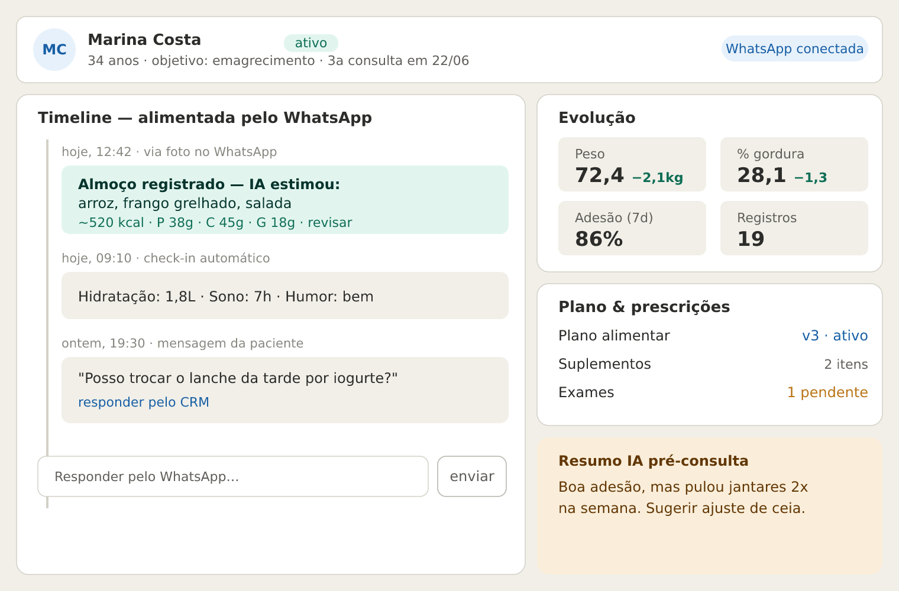
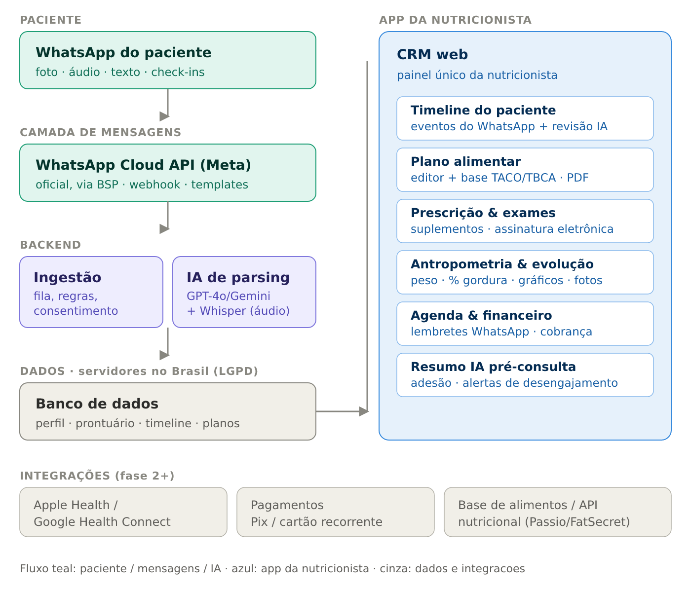

Objetivo deste documento: servir de briefing para desenvolver o design da aplicação (telas, protótipo ou código de UI). Reúne a visão do produto, as telas-referência, os fluxos do usuário e as regras de negócio. Complementa benchmark-crm-nutricionista.md e referencias-e-arquitetura-mvp.md.
1. Visão em uma frase
Um CRM web para a nutricionista gerenciar seus pacientes, onde o WhatsApp é o canal principal do paciente: tudo que ele envia (foto da refeição, áudio, texto, check-ins) é interpretado por IA e vira evento na timeline do perfil dele, pronto para a nutricionista revisar e agir.
Diferencial central: nenhum concorrente (BR ou internacional) usa o WhatsApp como canal que alimenta o prontuário. Hoje ele serve só para lembretes. Essa é a aposta.
Princípios de design:
- Verde clínico discreto como cor de marca (saúde séria, não "fitness app").
- A IA é sempre rascunho com revisão humana — nunca decide sozinha (respeita a responsabilidade do CFN).
- Densidade de prontuário: muita informação por tela, cards compactos, sem scroll infinito. O uso real é a nutricionista batendo o olho antes/durante a consulta.
2. Telas-referência
2.1 Tela de perfil do paciente (a tela central)

Estrutura: cabeçalho com identificação + status de conexão do WhatsApp; coluna esquerda com a timeline viva (eventos do WhatsApp, cada um com ação de revisão/resposta); coluna direita com o lado clínico (evolução, plano/prescrições/exames, resumo IA pré-consulta).
2.2 Arquitetura do MVP (contexto técnico)

Paciente → WhatsApp Cloud API oficial → backend (ingestão + IA de parsing) → banco no Brasil → CRM web da nutricionista. Integrações (Health Connect, pagamentos, base nutricional) entram em fase posterior.
3. Fluxos do usuário
Fluxo 1 — Onboarding do paciente
- Nutricionista cadastra o paciente no CRM (nome, contato, objetivo).
- Sistema envia ao paciente, pelo WhatsApp, o termo de consentimento (TCLE + LGPD) com finalidades separadas.
- Paciente aceita; consentimento é registrado com data/hora.
- Vínculo WhatsApp ↔ perfil é ativado; status do paciente passa a "ativo".
Fluxo 2 — Registro de refeição por foto (o coração do produto)
- Paciente fotografa a refeição e envia no WhatsApp.
- Webhook recebe a mídia; backend valida consentimento e tipo.
- IA (visão) identifica alimentos e estima porções/macros.
- Evento entra na timeline com status "a revisar" e a estimativa.
- Nutricionista confirma ou ajusta; o dado consolida no diário/evolução.
- (Opcional) Nutricionista responde pelo CRM e a mensagem sai no WhatsApp dela.
Fluxo 3 — Check-in automático
- Em horários definidos, o sistema envia perguntas curtas (hidratação, sono, humor, peso) via template.
- Resposta do paciente é estruturada e vira evento na timeline.
- Métricas alimentam os cards de evolução e os alertas de adesão.
Fluxo 4 — Mensagem livre do paciente
- Paciente manda uma dúvida ("posso trocar o lanche?").
- Mensagem aparece na timeline; abre janela de atendimento de 24h (gratuita).
- Nutricionista responde pelo CRM dentro da janela.
Fluxo 5 — Preparação para a consulta
- Antes da consulta, IA gera um resumo do período (adesão, registros, peso, dúvidas).
- Nutricionista revisa o resumo, ajusta plano/prescrições e registra a evolução.
- Documentos clínicos (plano, prescrição) são gerados em PDF assinado e disponibilizados por link autenticado.
Fluxo 6 — Prescrição e exames
- Nutricionista monta plano alimentar (editor com base TACO/TBCA) e prescreve suplementos do catálogo.
- Gera PDF com data, CRN, identificação do paciente e assinatura eletrônica.
- Solicita exames; quando o paciente envia resultados, eles entram no perfil com marcadores e histórico.
4. Regras de negócio
4.1 Pacientes e perfil
- Um paciente pertence a uma nutricionista; o vínculo WhatsApp é único por número.
- Status do paciente:
pré-cadastro→ativo→inativo/arquivado. Sem consentimento aceito, o paciente não recebe nem envia mensagens automatizadas. - Todo dado vindo do WhatsApp é associado ao paciente pelo número de origem; número não reconhecido não cria perfil automaticamente.
4.2 Timeline e IA
- Todo evento gerado por IA nasce com status "a revisar"; só conta para evolução/relatórios depois de confirmado pela nutricionista.
- A estimativa de IA é exibida sempre como aproximação (ex.: "~520 kcal"), nunca como medida exata.
- A nutricionista pode editar qualquer estimativa; a versão revisada é a oficial.
- Eventos são imutáveis após registro (auditoria): correções geram nova versão, não apagam a original.
4.3 WhatsApp e mensageria
- Apenas API oficial da Meta (Cloud API, direta ou via BSP). APIs não oficiais são proibidas.
- Mensagens iniciadas pela clínica fora da janela de 24h exigem template aprovado (categoria utility para lembretes/check-ins).
- Respostas dentro da janela de 24h aberta por mensagem do paciente são livres e sem custo de template.
- Conteúdo clínico sensível (exames, diagnósticos, prescrição) não trafega como texto no WhatsApp — apenas notificação + link autenticado para o portal.
- Limite de frequência: respeitar o teto da Meta para mensagens de marketing por usuário/dia.
4.4 Consentimento e privacidade (LGPD)
- Consentimento é específico por finalidade (lembretes, plano, marketing) e revogável a qualquer momento.
- Cada consentimento e revogação é registrado com data/hora e finalidade.
- O paciente pode solicitar acesso, correção, exclusão e portabilidade dos próprios dados; o sistema precisa suportar exportação completa.
- Dados de saúde são sensíveis: criptografia em repouso e em trânsito, logs de acesso, servidores preferencialmente no Brasil.
4.5 Documentos clínicos e CFN
- Plano alimentar e prescrição geram documento datado, com identificação do paciente, nome e CRN da nutricionista e assinatura eletrônica.
- Prontuário tem retenção mínima de 20 anos após o último registro.
- Atendimento remoto exige nutricionista cadastrada no e-Nutricionista e TCLE aceito antes da primeira interação.
- Prescrição de suplementos segue o rol permitido ao nutricionista; a responsabilidade técnica é da profissional.
4.6 Agenda e financeiro
- Agendamento dispara lembrete automático via WhatsApp (template utility).
- Cobrança pode ser avulsa ou recorrente; o vencimento e o reajuste devem ser transparentes ao paciente (evitar a dor de reajuste-surpresa dos concorrentes).
4.7 Acesso e papéis
- Papéis: nutricionista (acesso total ao próprio conjunto de pacientes) e, opcionalmente, secretária (agenda e cadastro, sem prontuário clínico).
- Autenticação da nutricionista com 2FA; paciente se identifica pelo número do WhatsApp.
5. Escopo por fase (para priorizar o design)
Fase 1 — núcleo que substitui o software atual: cadastro/prontuário, plano alimentar, prescrição/exames, antropometria/evolução, agenda. WhatsApp passivo (tudo que o paciente envia cai na timeline; resposta pelo CRM).
Fase 2 — IA alimentando o perfil: registro por foto/texto/áudio com IA, check-ins automáticos, resumo pré-consulta, alertas de desengajamento.
Fase 3 — diferenciação: portal/PWA do paciente, pagamentos recorrentes, integrações Apple Health / Google Health Connect, AI Scribe.
6. Telas a desenhar (sugestão de backlog de UI)
- Lista/dashboard de pacientes (busca, status, alertas de adesão).
- Perfil do paciente com timeline (tela central — ver mockup).
- Editor de plano alimentar.
- Tela de prescrição de suplementos + solicitação de exames.
- Antropometria e gráficos de evolução.
- Agenda e financeiro.
- Onboarding/consentimento do paciente.
- Visão do paciente (portal/PWA) — fase 3.
As imagens referenciadas (01-arquitetura-mvp.png, 02-mockup-perfil-paciente.png) estão na mesma pasta deste documento. Regras regulatórias resumidas aqui; ver o benchmark para fontes e detalhes das resoluções do CFN e da LGPD.